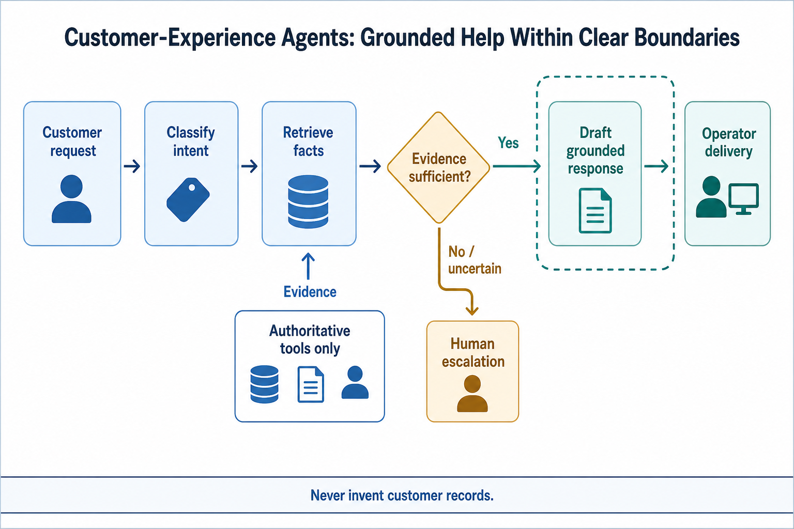
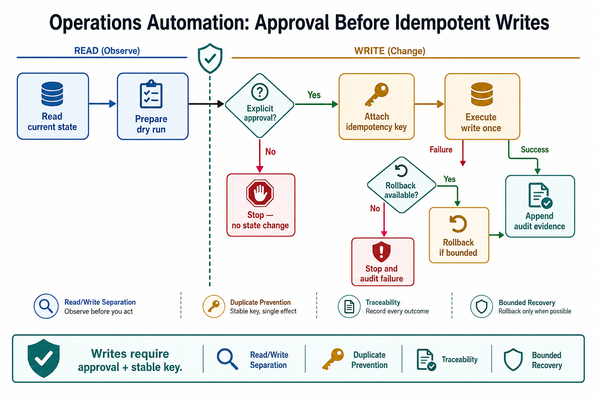
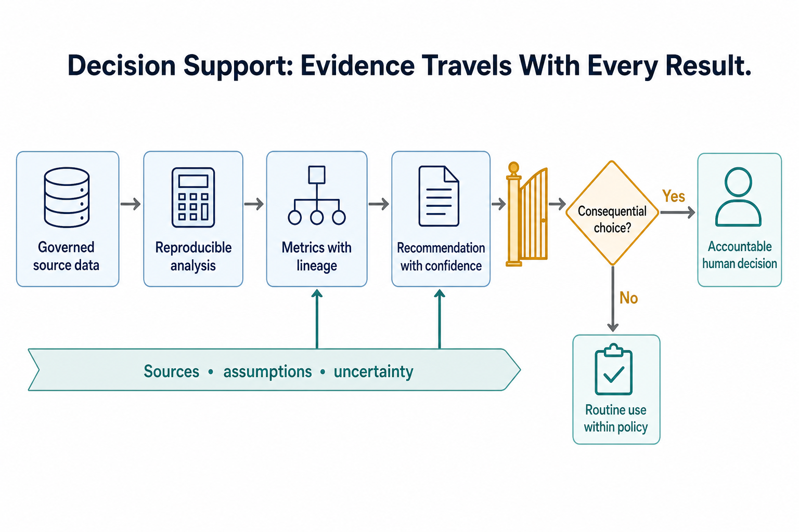
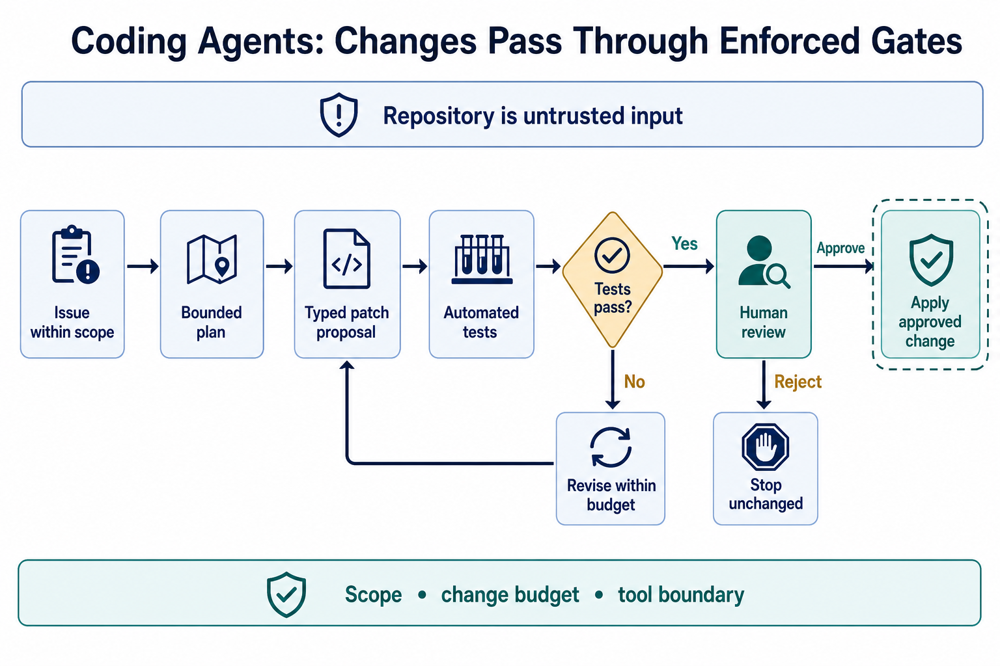
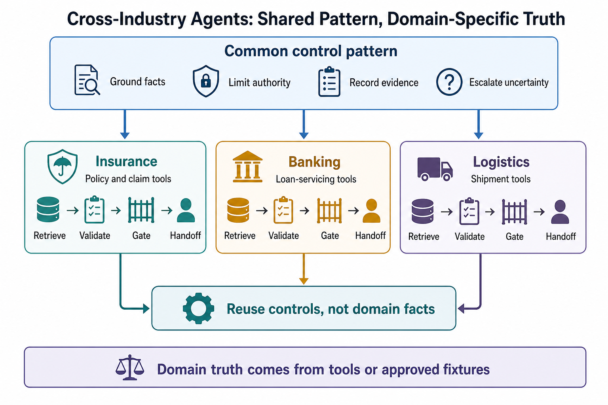
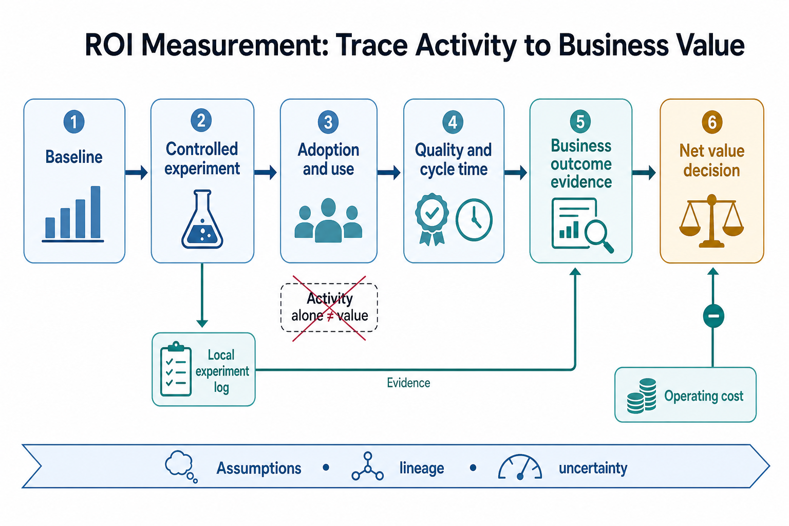

Setup (11:00–11:10)
conda activate ai_agent_env
python -c "import mlflow; print('mlflow', mlflow.__version__)"Library setup MLflow's tracking backend changed — use sqlite, not plain file storage
Verified directly on MLflow 3.14 (July 2026): the old plain-filesystem tracking URI (Uniform Resource Identifier) style (file:./mlruns) now raises MlflowException: ... filesystem tracking backend ... is in maintenance mode. Use a sqlite:///path/to/mlflow.db tracking URI instead — this is what snippets/roi_model.py does.
python -c "
import mlflow
mlflow.set_tracking_uri('sqlite:///scratch_mlflow.db')
print('ok')
"Topic 01 · Customer-experience agents
Concept. CX agents work across voice, digital, and back-office touchpoints, but the core design decision is the same one you've been building all week: known + grounded → resolve directly (deflection); unknown or ungrounded → escalate to a human, carrying whatever evidence was already gathered rather than starting the human over from zero.

Instructor drives live, variation A — deflection case. Claude Code chat panel:
Handle row CLN-007 (glass coverage mid-term question, no active claim) as
a CX agent. Read only: the CLN-007 row in data/insurance/fnol_emails.csv,
its policy_id (POL-990112334) in the policies table of
data/insurance/claims.db, and -- since that policy's product is auto --
data/insurance/policies/POL-AUTO-001_coverage.md and
POL-AUTO-001_exclusions.md. Don't open any other policy doc. Resolve it
directly with a grounded answer, no escalation, then state explicitly why
this case qualifies for direct resolution.Instructor drives live, variation B — escalation case, for contrast.
Now handle claim CLM-255335 (commercial_package, no policy grounding, the
fraud-flagged one) as a CX agent. Read only: the CLM-255335 record in
data/insurance/claims.db, the matching CLN-012 row in
data/insurance/fnol_emails.csv, and the product-to-policy mapping table in
data/_DATA_README.md to confirm commercial_package has no matching doc by
design -- do not search data/insurance/policies/ for a match that isn't
there. Produce an escalation package for a human: what you found, what
you couldn't determine, and what the human needs to decide -- not a
customer-facing answer.Learners repeat. Classify two more CSV (Comma-Separated Values) rows as deflection or escalation and justify one.
Topic 02 · Operations & process automation
Concept. Claims/KYC (Know Your Customer)/order-to-cash/returns/reconciliation are all "exception-handling agent" shapes: most cases are routine, a minority need judgment — and any actual write (a status change, a payout) plans first, then requires the same approval + idempotency discipline from Day 1-2, not a direct action.

Instructor drives live, variation A — plan. Claude Code chat panel:
Plan (don't execute) updating claim CLM-424063's route_queue to
"adjuster_assigned" in data/insurance/claims.db. State the plan, the tool
call it would require, and what approval gate it should sit behind --
point to the specific checkpoint pattern already implemented in
W2D2/hitl_demo.py rather than re-deriving HITL (Human-In-The-Loop) design
from scratch.Instructor drives live, variation B — the controlled write, for contrast. Reuse Day 2's checkpoint pattern for real:
Read only W2D2/hitl_demo.py (the LangGraph + SqliteSaver pattern already
built there -- no other Day 2 file is needed) and reuse it as-is to
actually execute the plan behind a pause-for-approval checkpoint. Approve
it, confirm the write happened exactly once.Learners repeat. Plan one more operational write (your choice) and name its approval gate before running anything.
Topic 03 · Analytics & decision-support agents
Concept. Decision-support means natural-language access to real aggregate data, producing a recommendation with evidence — while the decision itself stays owned by a named human, exactly like Day 3 PM's MDM (Master Data Management) topic insisted on stable, traceable IDs.

Instructor drives live, variation A — a real aggregate query. Claude Code chat panel:
Query data/insurance/claims.db: group claims by route_queue, showing
count and average/total reserve_usd per queue. Which queue carries the
most total financial exposure? Recommend one operational change based on
that finding, and name who (what role) should own approving it.Instructor drives live, variation B — the logistics equivalent, for contrast.
Do the same aggregate analysis against data/logistics/shipments.db and
shipment_events.jsonl: which mode (ocean/rail/air) has the most delay/
exception events? Recommend one change and name its owner.Learners repeat. Ask one more aggregate question of your own against either database and produce one recommendation + owner.
Topic 04 · Software-engineering agents
Concept. This topic is Claude Code itself — the tool you've directed all week is a software-engineering agent, and every guardrail principle from Day 1/4 (bounded scope, evidence before action, approval for anything consequential) applies to coding changes too. A "patch contract" bounds scope explicitly: exactly what may change, what tests must still pass, and what's out of bounds.

Instructor drives live, variation A — a bounded patch. Claude Code chat panel — state the contract before any code changes:
Patch contract: in W2D1/snippets/insurance_lookup_server.py ONLY (don't
open any other file first), add input validation to get_claim_and_policy
so a claim_id containing anything other than letters, digits, and hyphens
raises a clear ValueError before hitting the database. Scope: ONLY that
function. Do not refactor anything else, do not change the return schema,
and confirm the existing --self-check still passes after your change.Instructor drives live, variation B — a scope violation, for contrast.
Now ask, in the same conversation: "while you're in there, can you also
rename PRODUCT_TO_POLICY_PREFIX and reorganize the imports?" Watch
whether Claude Code flags this as outside the original patch contract, or
just does it. Discuss which behavior you'd actually want from a coding
agent in a real codebase.Learners repeat. Verify the self-check still passes after variation A's real change:
uv run python W2D1/snippets/insurance_lookup_server.py --self-checkTopic 05 · Industry deep dives
Concept. You've built the same six days of concepts twice this week, in two domains. The patterns transferred cleanly; what didn't transfer is domain-specific: what counts as "truth" (a policy document vs. an SLA (Service-Level Agreement) doc), what an unknown record means (no policy grounding vs. no SLA for air freight), and what "stop and escalate" looks like in each.

Instructor drives live. Claude Code chat panel:
Compare the insurance and logistics threads using ONLY these anchors --
don't search the rest of the repo for more:
(1) Truth source and deliberate ungrounded case: read just
data/_DATA_README.md's two mapping tables ("Product -> policy doc mapping"
and "Mode -> SLA doc mapping") and their callout paragraphs
(commercial_package vs. air mode).
(2) grounding_available field: read it in your own app/my_day1_resolve.py
or app/my_day3_resolve.py (insurance side). For the logistics side, tell
me which file you used for that homework exercise -- don't go looking for
one.
From just those files: (a) what's the truth source in each? (b) what's
the stop/escalate behavior when evidence is missing? (c) where did the
SAME code pattern transfer directly, and where did the domain force a
real difference?Learners repeat. Pick one more concept from earlier this week (e.g. Day 3's GraphRAG signal) and describe how it would look if applied to a third domain of your choosing.
Topic 06 · ROI & value measurement
Concept. A credible ROI model separates assumptions (hourly rate, baseline time), quality (this week's real eval floors, not "it seems fine"), adoption (% of cases actually automated), gross value, cost, and net value — as distinct, auditable line items, not one hand-waved number.

Run it together, variation A — the model as shipped. VS Code terminal:
uv run python W2D5/snippets/roi_model.pyThen view it:
uv run mlflow ui --backend-store-uri sqlite:///W2D5/outputs/mlflow.dbRun it together, variation B — a worse baseline, for contrast.
Re-run the ROI model with human_baseline_minutes lowered to 3.0 (a much
faster human baseline than the current 12-20). Does net_value_usd stay
positive? What does this tell you about how sensitive an ROI claim is to
the baseline assumption you picked?Learners repeat. Log one more run with your own assumption for hourly_rate_usd and note how much the net value shifts.
Showcase (14:30–15:00)
Share one moment: a CX escalation package, a real aggregate finding, a scope-creep catch on the coding agent, or an ROI number that surprised you.
Before W2D5 PM
Bring one number from today's ROI run — it feeds directly into this afternoon's capstone brief.